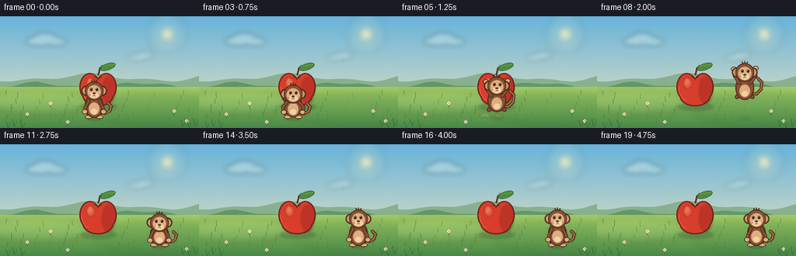
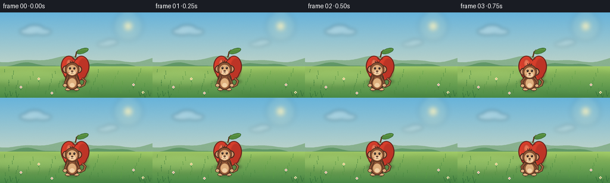

CODING AGENTS AS PIXEL WORLD MODELS
traex/DeepSeek-V4.1-Flash · dynamic_spatial_relationship_0060
点击播放 · 原生 RGB 像素
逐轮保存的候选
回放视频、检查图与代码变化。
每份候选均可单独播放。实际图片检查记录在下方工具轨迹中。
候选 01播放与检查图
点击播放 · 原生 RGB 像素

展开代码变化
--- 上一保存版本
+++ 本次保存版本
@@ -0,0 +1,400 @@
+from __future__ import annotations
+
+import math
+from pathlib import Path
+
+import numpy as np
+from PIL import Image, ImageDraw, ImageFilter
+
+import artifact_io
+
+
+WIDTH = 256
+HEIGHT = 144
+FPS = 4
+FRAME_COUNT = 20
+SCALE = 4
+
+
+def _mix(a: tuple[int, int, int], b: tuple[int, int, int], t: float) -> tuple[int, int, int]:
+ return tuple(round(a[i] + (b[i] - a[i]) * t) for i in range(3))
+
+
+def _rgb_gradient(size: tuple[int, int], top: tuple[int, int, int], bottom: tuple[int, int, int]) -> Image.Image:
+ width, height = size
+ y = np.linspace(0.0, 1.0, height, dtype=np.float32)[:, None]
+ colors = np.asarray(top, dtype=np.float32)[None, :] * (1.0 - y)
+ colors += np.asarray(bottom, dtype=np.float32)[None, :] * y
+ row = np.repeat(colors[:, None, :], width, axis=1).astype(np.uint8)
+ return Image.fromarray(row, "RGB")
+
+
+def _ellipse(draw: ImageDraw.ImageDraw, box, fill, outline=None, width=1):
+ scaled = tuple(round(v * SCALE) for v in box)
+ draw.ellipse(scaled, fill=fill, outline=outline, width=max(1, round(width * SCALE)))
+
+
+def _polygon(draw: ImageDraw.ImageDraw, points, fill, outline=None, width=1):
+ scaled = [(round(x * SCALE), round(y * SCALE)) for x, y in points]
+ draw.polygon(scaled, fill=fill, outline=outline, width=max(1, round(width * SCALE)))
+
+
+def _line(draw: ImageDraw.ImageDraw, points, fill, width):
+ scaled = [(round(x * SCALE), round(y * SCALE)) for x, y in points]
+ draw.line(scaled, fill=fill, width=max(1, round(width * SCALE)), joint="curve")
+ radius = width * SCALE / 2
+ for x, y in scaled:
+ draw.ellipse((x - radius, y - radius, x + radius, y + radius), fill=fill)
+
+
+def _arc(draw: ImageDraw.ImageDraw, box, start, end, fill, width):
+ scaled = tuple(round(v * SCALE) for v in box)
+ draw.arc(scaled, start, end, fill=fill, width=max(1, round(width * SCALE)))
+
+
+def _soft_layer(size):
+ return Image.new("RGBA", size, (0, 0, 0, 0))
+
+
+def _composite_soft(base: Image.Image, layer: Image.Image, blur: float = 0.0) -> Image.Image:
+ if blur > 0:
+ layer = layer.filter(ImageFilter.GaussianBlur(blur * SCALE))
+ return Image.alpha_composite(base, layer)
+
+
+def _draw_background(frame_index: int) -> Image.Image:
+ size = (WIDTH * SCALE, HEIGHT * SCALE)
+ sky = _rgb_gradient(size, (104, 180, 219), (242, 231, 190))
+ canvas = sky.convert("RGBA")
+ draw = ImageDraw.Draw(canvas, "RGBA")
+
+ # Warm late-afternoon light from the upper right.
+ glow = _soft_layer(size)
+ gd = ImageDraw.Draw(glow, "RGBA")
+ for radius, alpha in ((25, 22), (17, 28), (10, 42)):
+ _ellipse(gd, (215 - radius, 23 - radius, 215 + radius, 23 + radius), (255, 239, 181, alpha))
+ _ellipse(gd, (209, 17, 221, 29), (255, 245, 193, 238))
+ canvas = _composite_soft(canvas, glow, blur=4.0)
+ draw = ImageDraw.Draw(canvas, "RGBA")
+
+ cloud = _soft_layer(size)
+ cd = ImageDraw.Draw(cloud, "RGBA")
+ _ellipse(cd, (33, 26, 67, 38), (255, 255, 250, 64))
+ _ellipse(cd, (43, 21, 73, 34), (255, 255, 250, 70))
+ _ellipse(cd, (57, 27, 86, 38), (255, 255, 250, 58))
+ _ellipse(cd, (163, 49, 189, 58), (255, 255, 250, 34))
+ _ellipse(cd, (174, 45, 198, 55), (255, 255, 250, 42))
+ canvas = _composite_soft(canvas, cloud, blur=3.0)
+ draw = ImageDraw.Draw(canvas, "RGBA")
+
+ # Layered hills give the meadow depth without competing with the actors.
+ back_points = [(0, HEIGHT)]
+ for x in range(0, WIDTH + 3, 3):
+ y = 79 + 4.0 * math.sin(x * 0.035 + 0.7) + 2.0 * math.sin(x * 0.083 + 1.4)
+ back_points.append((x, y))
+ back_points.extend([(WIDTH, HEIGHT)])
+ _polygon(draw, back_points, (137, 177, 143))
+
+ mid_points = [(0, HEIGHT)]
+ for x in range(0, WIDTH + 3, 3):
+ y = 89 + 3.4 * math.sin(x * 0.047 + 2.5) + 1.5 * math.sin(x * 0.11)
+ mid_points.append((x, y))
+ mid_points.extend([(WIDTH, HEIGHT)])
+ _polygon(draw, mid_points, (99, 153, 105))
+
+ # Ground gradient and soft bands of grass.
+ ground = _rgb_gradient((WIDTH * SCALE, HEIGHT * SCALE - 91 * SCALE), (162, 204, 103), (73, 137, 70))
+ canvas.paste(ground.convert("RGBA"), (0, 91 * SCALE))
+ draw = ImageDraw.Draw(canvas, "RGBA")
+
+ band = _soft_layer(size)
+ bd = ImageDraw.Draw(band, "RGBA")
+ _ellipse(bd, (-20, 94, 121, 126), (206, 225, 142, 42))
+ _ellipse(bd, (122, 99, 285, 142), (60, 120, 65, 36))
+ canvas = _composite_soft(canvas, band, blur=5.0)
+ draw = ImageDraw.Draw(canvas, "RGBA")
+
+ # Tiny background flowers and grass keep the setting alive at this scale.
+ rng = np.random.default_rng(27)
+ for i in range(58):
+ x = 7 + (i * 71) % 247 + rng.uniform(-2.2, 2.2)
+ y = 101 + (i * 37) % 38 + rng.uniform(-1.2, 1.2)
+ sway = math.sin(frame_index * 0.65 + i * 1.7) * 0.8
+ color = _mix((57, 121, 59), (91, 157, 67), (i % 7) / 6)
+ _line(draw, [(x, y), (x + sway, y - 4 - i % 3)], color, 0.55)
+ flowers = ((35, 126), (65, 112), (224, 122), (240, 135), (87, 136))
+ for i, (x, y) in enumerate(flowers):
+ petal = (247, 235, 190) if i % 2 else (241, 210, 220)
+ _line(draw, [(x, y + 1), (x, y + 5)], (55, 116, 57), 0.65)
+ for dx, dy in ((-1.2, 0), (1.2, 0), (0, -1.2), (0, 1.2)):
+ _ellipse(draw, (x + dx - 1, y + dy - 1, x + dx + 1, y + dy + 1), petal)
+ _ellipse(draw, (x - 0.7, y - 0.7, x + 0.7, y + 0.7), (222, 165, 58))
+
+ # Fine grain prevents the broad gradients from looking mechanically flat.
+ arr = np.asarray(canvas.convert("RGB"), dtype=np.int16)
+ grain = np.random.default_rng(19).normal(0, 1.15, arr.shape[:2])[:, :, None]
+ arr = np.clip(arr + grain, 0, 255).astype(np.uint8)
+ return Image.fromarray(arr, "RGB").convert("RGBA")
+
+
+def _rotated_ellipse_points(cx, cy, rx, ry, angle, count=28):
+ points = []
+ for i in range(count):
+ t = math.tau * i / count
+ x = rx * math.cos(t)
+ y = ry * math.sin(t)
+ points.append((cx + x * math.cos(angle) - y * math.sin(angle),
+ cy + x * math.sin(angle) + y * math.cos(angle)))
+ return points
+
+
+def _draw_apple(canvas: Image.Image):
+ draw = ImageDraw.Draw(canvas, "RGBA")
+ cx, cy = 126.0, 92.0
+
+ shadow = _soft_layer(canvas.size)
+ sd = ImageDraw.Draw(shadow, "RGBA")
+ _ellipse(sd, (103, 112, 150, 121), (45, 77, 43, 74))
+ canvas = _composite_soft(canvas, shadow, blur=1.7)
+ draw = ImageDraw.Draw(canvas, "RGBA")
+
+ # Stem and leaf.
+ _line(draw, [(cx + 0.5, cy - 17), (cx + 2.5, cy - 25), (cx + 5.5, cy - 28)], (91, 58, 31), 2.2)
+ leaf = _rotated_ellipse_points(cx + 12.5, cy - 27, 10.5, 4.4, -0.32)
+ _polygon(draw, leaf, (82, 139, 62), (47, 96, 48), 0.8)
+ _line(draw, [(cx + 5, cy - 28), (cx + 20, cy - 30)], (151, 189, 91), 0.55)
+
+ # Three overlapping lobes make a rounded apple silhouette.
+ dark = (111, 38, 31)
+ _ellipse(draw, (cx - 24, cy - 19, cx + 3, cy + 17), dark)
+ _ellipse(draw, (cx - 3, cy - 19, cx + 24, cy + 17), dark)
+ _ellipse(draw, (cx - 20, cy - 3, cx + 20, cy + 24), dark)
+ red = (215, 62, 43)
+ _ellipse(draw, (cx - 22.3, cy - 17.5, cx + 1.6, cy + 15.4), red)
+ _ellipse(draw, (cx - 1.6, cy - 17.5, cx + 22.3, cy + 15.4), red)
+ _ellipse(draw, (cx - 18.3, cy - 1.4, cx + 18.3, cy + 22.3), red)
+
+ shade = _soft_layer(canvas.size)
+ shd = ImageDraw.Draw(shade, "RGBA")
+ _ellipse(shd, (cx + 5, cy - 14, cx + 23, cy + 21), (129, 28, 26, 76))
+ _ellipse(shd, (cx - 15, cy - 12, cx - 4, cy + 1), (255, 157, 105, 72))
+ _ellipse(shd, (cx - 14, cy - 13, cx - 7, cy - 3), (255, 206, 153, 100))
+ canvas = _composite_soft(canvas, shade, blur=1.1)
+ draw = ImageDraw.Draw(canvas, "RGBA")
+
+ # Small dimple and reflected edge light.
+ _arc(draw, (cx - 5, cy - 19, cx + 5, cy - 12), 12, 168, (119, 35, 31), 1.0)
+ _arc(draw, (cx - 21, cy - 15, cx + 1, cy + 16), 101, 186, (238, 105, 69), 0.8)
+ return canvas
+
+
+def _draw_monkey(canvas: Image.Image, cx: float, foot_y: float, pose: dict):
+ draw = ImageDraw.Draw(canvas, "RGBA")
+ squash = pose.get("squash", 1.0)
+ head_dx = pose.get("head_dx", 0.0)
+ head_dy = pose.get("head_dy", 0.0)
+ arm_pose = pose.get("arms", "idle")
+ leg_pose = pose.get("legs", "idle")
+ tail_phase = pose.get("tail_phase", 0.0)
+ look = pose.get("look", 0.0)
+
+ fur_dark = (72, 43, 30)
+ fur = (137, 82, 51)
+ fur_light = (167, 105, 65)
+ face = (222, 174, 124)
+ face_light = (242, 208, 165)
+ inner_ear = (205, 146, 104)
+ blush = (211, 116, 91)
+
+ body_cy = foot_y - 17 + (1.0 - squash) * 7.0
+ body_rx = 10.7
+ body_ry = 14.5 * squash
+ head_y = body_cy - 19.0 * squash + head_dy
+ head_x = cx + head_dx
+
+ # Tail is behind the body and changes shape with the jump.
+ if arm_pose == "jump":
+ tail = [(cx + 7, body_cy + 7), (cx + 15, body_cy + 8),
+ (cx + 21, body_cy + 2 + math.sin(tail_phase) * 1.2),
+ (cx + 22, body_cy - 7), (cx + 17, body_cy - 12)]
+ elif arm_pose == "land":
+ tail = [(cx + 7, body_cy + 8), (cx + 15, body_cy + 10),
+ (cx + 21, body_cy + 8), (cx + 24, body_cy + 2)]
+ else:
+ tail = [(cx + 7, body_cy + 8), (cx + 14, body_cy + 10),
+ (cx + 20, body_cy + 7 + math.sin(tail_phase) * 0.8),
+ (cx + 22, body_cy + 1), (cx + 18, body_cy - 3)]
+ _line(draw, tail, fur_dark, 4.0)
+ _line(draw, tail, fur_light, 2.1)
+
+ # Legs.
+ if leg_pose == "crouch":
+ left_leg = [(cx - 5, body_cy + 9), (cx - 9, foot_y - 6), (cx - 7, foot_y - 2)]
+ right_leg = [(cx + 5, body_cy + 9), (cx + 9, foot_y - 6), (cx + 7, foot_y - 2)]
+ elif leg_pose == "tuck":
+ left_leg = [(cx - 5, body_cy + 9), (cx - 10, body_cy + 12), (cx - 6, body_cy + 6)]
+ right_leg = [(cx + 5, body_cy + 9), (cx + 10, body_cy + 12), (cx + 6, body_cy + 6)]
+ elif leg_pose == "spread":
+ left_leg = [(cx - 5, body_cy + 9), (cx - 10, foot_y - 6), (cx - 8, foot_y - 2)]
+ right_leg = [(cx + 5, body_cy + 9), (cx + 10, foot_y - 6), (cx + 8, foot_y - 2)]
+ else:
+ left_leg = [(cx - 5, body_cy + 9), (cx - 7, foot_y - 5), (cx - 7, foot_y - 2)]
+ right_leg = [(cx + 5, body_cy + 9), (cx + 7, foot_y - 5), (cx + 7, foot_y - 2)]
+ _line(draw, left_leg, fur_dark, 5.2)
+ _line(draw, right_leg, fur_dark, 5.2)
+ _line(draw, left_leg, fur, 3.1)
+ _line(draw, right_leg, fur, 3.1)
+ for leg in (left_leg, right_leg):
+ fx, fy = leg[-1]
+ _ellipse(draw, (fx - 5, fy - 2.5, fx + 5, fy + 2.0), fur_dark)
+ _ellipse(draw, (fx - 4, fy - 2.0, fx + 4, fy + 1.2), face)
+
+ # Body, belly, and a little tuft of chest fur.
+ _ellipse(draw, (cx - body_rx - 1.2, body_cy - body_ry - 1.0,
+ cx + body_rx + 1.2, body_cy + body_ry + 1.2), fur_dark)
+ _ellipse(draw, (cx - body_rx, body_cy - body_ry, cx + body_rx, body_cy + body_ry), fur)
+ _ellipse(draw, (cx - 6.7, body_cy - 4.0, cx + 6.7, body_cy + 12.0), face)
+ _ellipse(draw, (cx - 4.0, body_cy + 4.0, cx + 4.0, body_cy + 11.0), face_light)
+
+ # Arms are in front of the torso.
+ if arm_pose == "jump":
+ left_arm = [(cx - 7, body_cy - 6), (cx - 13, body_cy - 15), (cx - 14, body_cy - 24)]
+ right_arm = [(cx + 7, body_cy - 6), (cx + 14, body_cy - 15), (cx + 14, body_cy - 25)]
+ elif arm_pose == "crouch":
+ left_arm = [(cx - 7, body_cy - 6), (cx - 13, body_cy + 1), (cx - 12, body_cy + 8)]
+ right_arm = [(cx + 7, body_cy - 6), (cx + 13, body_cy + 1), (cx + 12, body_cy + 8)]
+ elif arm_pose == "land":
+ left_arm = [(cx - 7, body_cy - 5), (cx - 15, body_cy + 2), (cx - 19, body_cy + 8)]
+ right_arm = [(cx + 7, body_cy - 5), (cx + 15, body_cy + 2), (cx + 19, body_cy + 8)]
+ else:
+ left_arm = [(cx - 7, body_cy - 6), (cx - 11, body_cy + 2), (cx - 12, body_cy + 8)]
+ right_arm = [(cx + 7, body_cy - 6), (cx + 11, body_cy + 2), (cx + 12, body_cy + 8)]
+ for arm in (left_arm, right_arm):
+ _line(draw, arm, fur_dark, 4.5)
+ _line(draw, arm, fur, 2.7)
+ hx, hy = arm[-1]
+ _ellipse(draw, (hx - 3.7, hy - 3.2, hx + 3.7, hy + 3.0), fur_dark)
+ _ellipse(draw, (hx - 2.8, hy - 2.4, hx + 2.8, hy + 2.2), face)
+
+ # Ears sit behind the head.
+ for side in (-1, 1):
+ ex = head_x + side * 10.0
+ _ellipse(draw, (ex - 6.5, head_y - 6.5, ex + 6.5, head_y + 6.5), fur_dark)
+ _ellipse(draw, (ex - 4.9, head_y - 4.9, ex + 4.9, head_y + 4.9), inner_ear)
+ _ellipse(draw, (ex - 3.0, head_y - 2.8, ex + 3.0, head_y + 2.8), (230, 177, 132))
+
+ # Head and face.
+ _ellipse(draw, (head_x - 12.1, head_y - 12.1, head_x + 12.1, head_y + 12.1), fur_dark)
+ _ellipse(draw, (head_x - 11.0, head_y - 11.0, head_x + 11.0, head_y + 11.0), fur)
+ _ellipse(draw, (head_x - 8.6, head_y - 7.3, head_x + 8.6, head_y + 10.0), face)
+ _ellipse(draw, (head_x - 6.1, head_y + 1.7, head_x + 6.1, head_y + 9.2), face_light)
+
+ # Eyes, nose, smile, and blush.
+ eye_y = head_y - 1.7
+ for side in (-1, 1):
+ ex = head_x + side * 3.7 + look * 0.8
+ _ellipse(draw, (ex - 1.65, eye_y - 2.0, ex + 1.65, eye_y + 2.0), (50, 34, 28))
+ _ellipse(draw, (ex - 0.65, eye_y - 1.35, ex + 0.15, eye_y - 0.55), (255, 250, 231))
+ _ellipse(draw, (head_x + side * 6.6, head_y + 4.4, head_x + side * 6.6 + 2.0,
+ head_y + 5.9), (*blush, 120))
+ _ellipse(draw, (head_x - 2.0, head_y + 2.0, head_x + 2.0, head_y + 4.3), (91, 54, 38))
+ _arc(draw, (head_x - 4.0, head_y + 3.2, head_x, head_y + 7.0), 8, 84, (92, 52, 36), 0.7)
+ _arc(draw, (head_x, head_y + 3.2, head_x + 4.0, head_y + 7.0), 96, 172, (92, 52, 36), 0.7)
+
+ # Hair tuft.
+ _line(draw, [(head_x - 2.0, head_y - 10.8), (head_x - 3.3, head_y - 13.6)], fur_dark, 1.2)
+ _line(draw, [(head_x, head_y - 11.0), (head_x, head_y - 14.0)], fur_dark, 1.2)
+ _line(draw, [(head_x + 2.0, head_y - 10.8), (head_x + 3.4, head_y - 13.2)], fur_dark, 1.2)
+
+
+def _draw_dust(canvas: Image.Image, x: float, y: float, strength: float):
+ if strength <= 0:
+ return canvas
+ layer = _soft_layer(canvas.size)
+ draw = ImageDraw.Draw(layer, "RGBA")
+ for i in range(5):
+ side = -1 if i % 2 == 0 else 1
+ px = x + side * (5 + i * 1.8)
+ py = y - 2 - (i % 3) * 1.2
+ radius = 2.0 + (i % 3) * 0.9 + strength * 1.5
+ _ellipse(draw, (px - radius, py - radius * 0.55, px + radius, py + radius * 0.55),
+ (204, 178, 122, round(85 * strength)))
+ return _composite_soft(canvas, layer, blur=1.1)
+
+
+def _pose_for_frame(frame_index: int):
+ keyframes = {
+ 0: (121.0, 132.0, dict(squash=1.00, head_dy=0.0, arms="idle", legs="idle", look=0.0)),
+ 1: (121.0, 132.0, dict(squash=1.01, head_dy=-0.3, arms="idle", legs="idle", look=0.0)),
+ 2: (121.0, 132.0, dict(squash=1.00, head_dy=0.0, arms="idle", legs="idle", look=0.2)),
+ 3: (121.0, 132.0, dict(squash=0.92, head_dy=2.0, arms="crouch", legs="crouch", look=0.3)),
+ 4: (121.5, 132.0, dict(squash=0.80, head_dy=4.0, arms="crouch", legs="crouch", look=0.4)),
+ 5: (127.0, 125.0, dict(squash=0.94, head_dy=-1.0, arms="jump", legs="tuck", look=0.7)),
+ 6: (143.0, 108.0, dict(squash=1.02, head_dy=-1.5, arms="jump", legs="tuck", look=0.9)),
+ 7: (166.0, 94.0, dict(squash=1.00, head_dy=-1.0, arms="jump", legs="tuck", look=0.9)),
+ 8: (190.0, 109.0, dict(squash=1.01, head_dy=-0.5, arms="jump", legs="tuck", look=0.7)),
+ 9: (202.0, 127.0, dict(squash=0.94, head_dy=1.0, arms="land", legs="spread", look=0.3)),
+ 10: (205.0, 132.0, dict(squash=0.78, head_dy=5.0, arms="land", legs="spread", look=-0.2)),
+ 11: (205.0, 132.0, dict(squash=0.90, head_dy=2.2, arms="idle", legs="idle", look=-0.5)),
+ 12: (205.0, 132.0, dict(squash=1.01, head_dy=-0.4, arms="idle", legs="idle", look=-0.8)),
+ 13: (205.0, 132.0, dict(squash=1.00, head_dy=0.0, arms="idle", legs="idle", look=-0.8)),
+ 14: (205.0, 132.0, dict(squash=1.00, head_dy=0.0, arms="idle", legs="idle", look=-0.7)),
+ 15: (205.0, 132.0, dict(squash=1.00, head_dy=0.0, arms="idle", legs="idle", look=-0.7)),
+ 16: (205.0, 132.0, dict(squash=1.00, head_dy=0.0, arms="idle", legs="idle", look=-0.6)),
+ 17: (205.0, 132.0, dict(squash=1.00, head_dy=0.0, arms="idle", legs="idle", look=-0.6)),
+ 18: (205.0, 132.0, dict(squash=1.00, head_dy=0.0, arms="idle", legs="idle", look=-0.5)),
+ 19: (205.0, 132.0, dict(squash=1.00, head_dy=0.0, arms="idle", legs="idle", look=-0.5)),
+ }
+ return keyframes[frame_index]
+
+
+def _draw_monkey_shadow(canvas: Image.Image, x: float, foot_y: float, strength: float):
+ layer = _soft_layer(canvas.size)
+ draw = ImageDraw.Draw(layer, "RGBA")
+ lift = max(0.0, 132.0 - foot_y)
+ width = max(8.0, 20.0 - lift * 0.20)
+ alpha = round(70 * strength)
+ _ellipse(draw, (x - width / 2, 129.5, x + width / 2, 134.0), (43, 73, 40, alpha))
+ return _composite_soft(canvas, layer, blur=1.7)
+
+
+def _draw_foreground(canvas: Image.Image, frame_index: int) -> Image.Image:
+ draw = ImageDraw.Draw(canvas, "RGBA")
+ # A few foreground blades frame the bottom edge.
+ for i, x in enumerate((10, 18, 28, 235, 243, 251)):
+ y = 143 - (i % 2) * 2
+ sway = math.sin(frame_index * 0.55 + i) * 0.7
+ color = (45, 107, 55, 150)
+ _line(draw, [(x, y), (x - 2 + sway, y - 7 - i % 3)], color, 0.7)
+ _line(draw, [(x + 1, y), (x + 3 + sway, y - 5)], color, 0.55)
+ return canvas
+
+
+def render_frame(frame_index: int) -> np.ndarray:
+ canvas = _draw_background(frame_index)
+
+ x, foot_y, pose = _pose_for_frame(frame_index)
+ canvas = _draw_monkey_shadow(canvas, x, foot_y, 1.0 if foot_y > 128 else 0.48)
+ canvas = _draw_apple(canvas)
+ _draw_monkey(canvas, x, foot_y, pose)
+
+ if frame_index in (4, 5):
+ canvas = _draw_dust(canvas, 121.0, 131.0, 0.75 if frame_index == 5 else 0.45)
+ elif frame_index in (9, 10):
+ canvas = _draw_dust(canvas, 204.0, 131.5, 0.9 if frame_index == 10 else 0.55)
+ elif frame_index == 11:
+ canvas = _draw_dust(canvas, 204.0, 131.5, 0.25)
+
+ canvas = _draw_foreground(canvas, frame_index)
+ final = canvas.convert("RGB").resize((WIDTH, HEIGHT), Image.Resampling.LANCZOS)
+ return np.asarray(final, dtype=np.uint8)
+
+
+def main():
+ frames = np.stack([render_frame(i) for i in range(FRAME_COUNT)])
+ artifact_io.save(frames, Path(__file__).resolve().parent)
+ print(f"Wrote {FRAME_COUNT} frames at {WIDTH}x{HEIGHT}, {FPS} fps")
+
+
+if __name__ == "__main__":
+ main()
候选 02播放与检查图
点击播放 · 原生 RGB 像素


展开代码变化
--- 上一保存版本
+++ 本次保存版本
@@ -26,7 +26,7 @@
colors = np.asarray(top, dtype=np.float32)[None, :] * (1.0 - y)
colors += np.asarray(bottom, dtype=np.float32)[None, :] * y
row = np.repeat(colors[:, None, :], width, axis=1).astype(np.uint8)
- return Image.fromarray(row, "RGB")
+ return Image.fromarray(row)
def _ellipse(draw: ImageDraw.ImageDraw, box, fill, outline=None, width=1):
@@ -134,7 +134,7 @@
arr = np.asarray(canvas.convert("RGB"), dtype=np.int16)
grain = np.random.default_rng(19).normal(0, 1.15, arr.shape[:2])[:, :, None]
arr = np.clip(arr + grain, 0, 255).astype(np.uint8)
- return Image.fromarray(arr, "RGB").convert("RGBA")
+ return Image.fromarray(arr).convert("RGBA")
def _rotated_ellipse_points(cx, cy, rx, ry, angle, count=28):
@@ -293,8 +293,11 @@
eye_y = head_y - 1.7
for side in (-1, 1):
ex = head_x + side * 3.7 + look * 0.8
- _ellipse(draw, (ex - 1.65, eye_y - 2.0, ex + 1.65, eye_y + 2.0), (50, 34, 28))
- _ellipse(draw, (ex - 0.65, eye_y - 1.35, ex + 0.15, eye_y - 0.55), (255, 250, 231))
+ if pose.get("blink", False):
+ _arc(draw, (ex - 1.8, eye_y - 1.0, ex + 1.8, eye_y + 2.0), 15, 165, (50, 34, 28), 0.7)
+ else:
+ _ellipse(draw, (ex - 1.65, eye_y - 2.0, ex + 1.65, eye_y + 2.0), (50, 34, 28))
+ _ellipse(draw, (ex - 0.65, eye_y - 1.35, ex + 0.15, eye_y - 0.55), (255, 250, 231))
_ellipse(draw, (head_x + side * 6.6, head_y + 4.4, head_x + side * 6.6 + 2.0,
head_y + 5.9), (*blush, 120))
_ellipse(draw, (head_x - 2.0, head_y + 2.0, head_x + 2.0, head_y + 4.3), (91, 54, 38))
@@ -338,9 +341,9 @@
11: (205.0, 132.0, dict(squash=0.90, head_dy=2.2, arms="idle", legs="idle", look=-0.5)),
12: (205.0, 132.0, dict(squash=1.01, head_dy=-0.4, arms="idle", legs="idle", look=-0.8)),
13: (205.0, 132.0, dict(squash=1.00, head_dy=0.0, arms="idle", legs="idle", look=-0.8)),
- 14: (205.0, 132.0, dict(squash=1.00, head_dy=0.0, arms="idle", legs="idle", look=-0.7)),
- 15: (205.0, 132.0, dict(squash=1.00, head_dy=0.0, arms="idle", legs="idle", look=-0.7)),
- 16: (205.0, 132.0, dict(squash=1.00, head_dy=0.0, arms="idle", legs="idle", look=-0.6)),
+ 14: (205.0, 132.0, dict(squash=1.01, head_dy=-0.2, arms="idle", legs="idle", look=-0.7)),
+ 15: (205.0, 132.0, dict(squash=1.00, head_dy=0.0, arms="idle", legs="idle", look=-0.7, blink=True)),
+ 16: (205.0, 132.0, dict(squash=0.995, head_dy=0.3, arms="idle", legs="idle", look=-0.6)),
17: (205.0, 132.0, dict(squash=1.00, head_dy=0.0, arms="idle", legs="idle", look=-0.6)),
18: (205.0, 132.0, dict(squash=1.00, head_dy=0.0, arms="idle", legs="idle", look=-0.5)),
19: (205.0, 132.0, dict(squash=1.00, head_dy=0.0, arms="idle", legs="idle", look=-0.5)),
@@ -374,6 +377,7 @@
canvas = _draw_background(frame_index)
x, foot_y, pose = _pose_for_frame(frame_index)
+ pose = dict(pose, tail_phase=frame_index * 0.48)
canvas = _draw_monkey_shadow(canvas, x, foot_y, 1.0 if foot_y > 128 else 0.48)
canvas = _draw_apple(canvas)
_draw_monkey(canvas, x, foot_y, pose)
候选 03播放与检查图
可观测工具轨迹
实际执行的命令与返回图片。
命令 1exit 0
/bin/bash -c "pwd && rg --files -g 'prompt.txt' -g 'GENERATION_RULES.md' -g 'task_spec.json' -g '"'!*.mp4'"'"
命令 2exit 0
/bin/bash -c 'ls -la'
命令 3exit 0
/bin/bash -c 'cat prompt.txt'
命令 4exit 0
/bin/bash -c 'cat GENERATION_RULES.md'
命令 5exit 0
/bin/bash -c 'cat task_spec.json'
命令 6exit 0
/bin/bash -c "sed -n '1,260p' artifact_io.py"
命令 7exit 1
/bin/bash -c 'python generate.py'
命令 8exit 0
/bin/bash -c 'python generate.py'
命令 9exit 0
/bin/bash -c "python - <<'PY'
from PIL import Image
import numpy as np, json, pathlib
frames=[np.asarray(Image.open(p).convert('RGB')) for p in sorted(pathlib.Path('frames').glob('*.png'))]
print('frames',len(frames),'shape',frames[0].shape,'dtype',frames[0].dtype)
print('unique colors frame0',len(np.unique(frames[0].reshape(-1,3),axis=0)))
# motion bounding box of large differences from frame0 to frame7
m=np.max(np.abs(frames[7].astype(int)-frames[0].astype(int)),axis=2)>30
ys,xs=np.where(m)
print('changed bbox frame0->7', (xs.min(),ys.min(),xs.max(),ys.max()), 'pixels', m.sum())
PY
ls -lh index.html pixels.npz inspection.png transition_check.png frames | head -25"命令 10exit 0
/bin/bash -c 'python generate.py'
命令 11exit 1
/bin/bash -c "python - <<'PY'
from pathlib import Path
from PIL import Image
import numpy as np, json
spec=json.loads(Path('task_spec.json').read_text())
paths=sorted(Path('frames').glob('*.png'))
frames=np.stack([np.asarray(Image.open(p).convert('RGB')) for p in paths])
assert frames.shape == (spec['frames'], spec['height'], spec['width'], 3)
assert frames.dtype == np.uint8
assert all((frames[i] "'!= frames[i-1]).any() for i in range(1, len(frames)))
packed=np.load('"'pixels.npz')['pixels']
assert packed.shape == (spec['height'], spec['width'], spec['frames'])
recovered=np.stack([((packed[:,:,i]>>16)&255).astype(np.uint8), ((packed[:,:,i]>>8)&255).astype(np.uint8), (packed[:,:,i]&255).astype(np.uint8)],axis=2)
assert np.array_equal(recovered, frames)
assert Path('index.html').stat().st_size > 100000
print('validated', len(frames), 'RGB frames,', frames.shape[1], 'x', frames.shape[2], 'at', spec['fps'], 'fps')
print('pixel tensor', packed.shape, 'index.html', Path('index.html').stat().st_size, 'bytes')
print('per-frame changed pixels min/max', min(np.count_nonzero(np.any(frames[i]"'!=frames[i-1],axis=2)) for i in range(1,len(frames))), max(np.count_nonzero(np.any(frames[i]!=frames[i-1],axis=2)) for i in range(1,len(frames))))
PY'命令 12exit 1
/bin/bash -c "python - <<'PY'
from pathlib import Path
from PIL import Image
import numpy as np, json
spec=json.loads(Path('task_spec.json').read_text())
paths=sorted(Path('frames').glob('*.png'))
frames=np.stack([np.asarray(Image.open(p).convert('RGB')) for p in paths])
assert frames.shape == (spec['frames'], spec['height'], spec['width'], 3)
assert frames.dtype == np.uint8
assert all(np.any(frames[i] "'!= frames[i-1]) for i in range(1, len(frames)))
packed=np.load('"'pixels.npz')['pixels']
assert packed.shape == (spec['height'], spec['width'], spec['frames'])
recovered=np.stack([((packed[:,:,i]>>16)&255).astype(np.uint8), ((packed[:,:,i]>>8)&255).astype(np.uint8), (packed[:,:,i]&255).astype(np.uint8)],axis=2)
assert np.array_equal(recovered, frames)
assert Path('index.html').stat().st_size > 100000
changed=[np.count_nonzero(np.any(frames[i]"'!=frames[i-1],axis=2)) for i in range(1,len(frames))]
print('"'validated', len(frames), 'RGB frames,', frames.shape[2], 'x', frames.shape[1], 'at', spec['fps'], 'fps')
print('pixel tensor', packed.shape, 'index.html', Path('index.html').stat().st_size, 'bytes')
print('per-frame changed pixels min/max', min(changed), max(changed))
PY"命令 13exit 1
/bin/bash -c "python - <<'PY'
from pathlib import Path
from PIL import Image
import numpy as np, json
spec=json.loads(Path('task_spec.json').read_text())
paths=sorted(Path('frames').glob('*.png'))
frames=np.stack([np.asarray(Image.open(p).convert('RGB')) for p in paths])
assert frames.shape == (spec['frames'], spec['height'], spec['width'], 3)
assert frames.dtype == np.uint8
assert all(np.any(frames[k] "'!= frames[k-1]) for k in range(1, len(frames)))
packed=np.load('"'pixels.npz')['pixels']
assert packed.shape == (spec['height'], spec['width'], spec['frames'])
channels=[((packed >> shift) & 255).astype(np.uint8) for shift in (16, 8, 0)]
recovered=np.stack(channels, axis=2).transpose(2, 0, 1)
assert np.array_equal(recovered, frames)
assert Path('index.html').stat().st_size > 100000
changed=[np.count_nonzero(np.any(frames[k]"'!=frames[k-1],axis=2)) for k in range(1,len(frames))]
print('"'validated', len(frames), 'RGB frames,', frames.shape[2], 'x', frames.shape[1], 'at', spec['fps'], 'fps')
print('pixel tensor', packed.shape, 'index.html', Path('index.html').stat().st_size, 'bytes')
print('per-frame changed pixels min/max', min(changed), max(changed))
PY"命令 14exit 1
/bin/bash -c "python - <<'PY'
from pathlib import Path
from PIL import Image
import numpy as np, json
spec=json.loads(Path('task_spec.json').read_text())
paths=sorted(Path('frames').glob('*.png'))
frames=np.stack([np.asarray(Image.open(p).convert('RGB')) for p in paths])
assert frames.shape == (spec['frames'], spec['height'], spec['width'], 3)
assert frames.dtype == np.uint8
assert all(np.any(frames[k] "'!= frames[k-1]) for k in range(1, len(frames)))
packed=np.load('"'pixels.npz')['pixels']
assert packed.shape == (spec['height'], spec['width'], spec['frames'])
recovered=np.stack([(packed >> shift) & 255 for shift in (16, 8, 0)], axis=2)
assert np.array_equal(recovered.astype(np.uint8).transpose(2, 0, 1), frames)
assert Path('index.html').stat().st_size > 100000
changed=[np.count_nonzero(np.any(frames[k]"'!=frames[k-1],axis=2)) for k in range(1,len(frames))]
print('"'validated', len(frames), 'RGB frames,', frames.shape[2], 'x', frames.shape[1], 'at', spec['fps'], 'fps')
print('pixel tensor', packed.shape, 'index.html', Path('index.html').stat().st_size, 'bytes')
print('per-frame changed pixels min/max', min(changed), max(changed))
PY"命令 15exit 0
/bin/bash -c "python - <<'PY'
from pathlib import Path
from PIL import Image
import numpy as np, json
spec=json.loads(Path('task_spec.json').read_text())
paths=sorted(Path('frames').glob('*.png'))
frames=np.stack([np.asarray(Image.open(p).convert('RGB')) for p in paths])
assert frames.shape == (spec['frames'], spec['height'], spec['width'], 3)
assert frames.dtype == np.uint8
assert all(np.any(frames[k] "'!= frames[k-1]) for k in range(1, len(frames)))
packed=np.load('"'pixels.npz')['pixels']
assert packed.shape == (spec['height'], spec['width'], spec['frames'])
recovered=np.stack([(packed >> shift) & 255 for shift in (16, 8, 0)], axis=2)
assert np.array_equal(recovered.astype(np.uint8).transpose(2, 0, 1, 3), frames)
assert Path('index.html').stat().st_size > 100000
changed=[np.count_nonzero(np.any(frames[k]"'!=frames[k-1],axis=2)) for k in range(1,len(frames))]
print('"'validated', len(frames), 'RGB frames,', frames.shape[2], 'x', frames.shape[1], 'at', spec['fps'], 'fps')
print('pixel tensor', packed.shape, 'index.html', Path('index.html').stat().st_size, 'bytes')
print('per-frame changed pixels min/max', min(changed), max(changed))
PY
python -m py_compile generate.py"命令 16exit 0
/bin/bash -c "python - <<'PY'
from pathlib import Path
from PIL import Image
import numpy as np, json
spec=json.loads(Path('task_spec.json').read_text())
paths=sorted(Path('frames').glob('*.png'))
frames=np.stack([np.asarray(Image.open(p).convert('RGB')) for p in paths])
assert frames.shape == (spec['frames'], spec['height'], spec['width'], 3)
assert frames.dtype == np.uint8
assert all(np.any(frames[k] "'!= frames[k-1]) for k in range(1, len(frames)))
packed=np.load('"'pixels.npz')['pixels']
assert packed.shape == (spec['height'], spec['width'], spec['frames'])
recovered=np.stack([(packed >> shift) & 255 for shift in (16, 8, 0)], axis=2)
assert np.array_equal(recovered.astype(np.uint8).transpose(3, 1, 2, 0), frames)
assert Path('index.html').stat().st_size > 100000
changed=[np.count_nonzero(np.any(frames[k]"'!=frames[k-1],axis=2)) for k in range(1,len(frames))]
print('"'validated', len(frames), 'RGB frames,', frames.shape[2], 'x', frames.shape[1], 'at', spec['fps'], 'fps')
print('pixel tensor', packed.shape, 'index.html', Path('index.html').stat().st_size, 'bytes')
print('per-frame changed pixels min/max', min(changed), max(changed))
PY
python -m py_compile generate.py"命令 17exit 0
/bin/bash -c "python - <<'PY'
from pathlib import Path
from PIL import Image
import numpy as np, json
spec=json.loads(Path('task_spec.json').read_text())
paths=sorted(Path('frames').glob('*.png'))
frames=np.stack([np.asarray(Image.open(p).convert('RGB')) for p in paths])
assert frames.shape == (spec['frames'], spec['height'], spec['width'], 3)
assert frames.dtype == np.uint8
assert all(np.any(frames[k] "'!= frames[k-1]) for k in range(1, len(frames)))
packed=np.load('"'pixels.npz')['pixels']
assert packed.shape == (spec['height'], spec['width'], spec['frames'])
recovered=np.stack([(packed >> shift) & 255 for shift in (16, 8, 0)], axis=2)
assert np.array_equal(recovered.astype(np.uint8).transpose(3, 0, 1, 2), frames)
assert Path('index.html').stat().st_size > 100000
changed=[np.count_nonzero(np.any(frames[k]"'!=frames[k-1],axis=2)) for k in range(1,len(frames))]
print('"'validated', len(frames), 'RGB frames,', frames.shape[2], 'x', frames.shape[1], 'at', spec['fps'], 'fps')
print('pixel tensor', packed.shape, 'index.html', Path('index.html').stat().st_size, 'bytes')
print('per-frame changed pixels min/max', min(changed), max(changed))
PY
python -m py_compile generate.py"命令 18exit 0
/bin/bash -c 'ls -lh generate.py prompt.txt task_spec.json GENERATION_RULES.md index.html pixels.npz inspection.png transition_check.png && find frames -maxdepth 1 -type f | wc -l'
视觉工具实际返回图片 1

视觉工具实际返回图片 2

视觉工具实际返回图片 3

保存候选 3 份；完成命令 18 次；可验证图片返回 3 张。原始 API 响应与完整日志保留在本地。